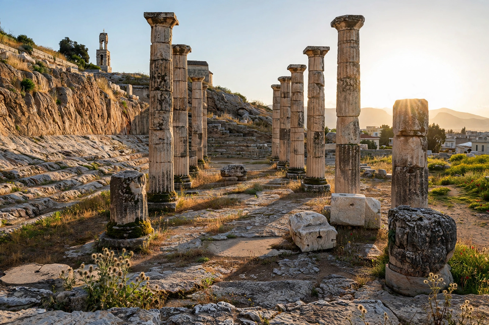

Eleusis
| Country | Greece |
|---|---|
| Region | Attica |
| Modern town | Elefsina |
| Famous for | Eleusinian Mysteries; sanctuary of Demeter and Persephone |
| Distance from Athens | About 18 km northwest |

Eleusis (Greek: Ελευσίς) is a town in Attica, Greece, about 18 kilometres northwest of Athens, known in antiquity as the site of the Eleusinian Mysteries, the most famous of the secret religious rites of ancient Greece. The sanctuary of Demeter and her daughter Persephone (Kore) drew initiates from across the Greek and Roman world for nearly two thousand years.
The Mysteries
According to the Homeric Hymn to Demeter, the goddess founded the rites at Eleusis while searching for her abducted daughter. Each autumn, initiates walked the Sacred Way from Athens in a great procession, fasting, drinking the kykeon, and finally entering the Telesterion, a vast roofed hall where the hierophant revealed sacred objects and the initiates underwent experiences — "things done, things said, things shown" — that were kept secret under penalty of death. Initiation promised a happier lot after death and was open to women, foreigners, and even slaves who spoke Greek and had not committed murder.
History
The sanctuary was monumentalized under the Peisistratids and again in the classical and Roman periods; emperors including Hadrian and Marcus Aurelius were initiates. The Mysteries were suppressed in the late fourth century AD as Christianity triumphed, and the sanctuary was destroyed, traditionally by the Goths of Alaric in 396. The modern town, Elefsina, is an industrial port and ship-breaking centre; it was the birthplace of the tragedian Aeschylus, author of The Persians, and was named a European Capital of Culture for 2023.